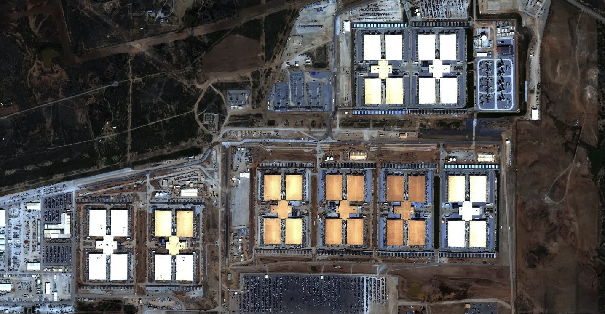

问 AI 一个问题
第一段 · 一次点击
屏幕上只有一个旋转的小圆点。没有烟囱，没有排气声，连等待都被设计成一个温柔的省略号。几秒钟后，答案出现了，干净、即时、仿佛凭空而来。
但在你看不见的某个地方，一件具体的事正在发生：成百上千张芯片为了回答你这句话而升温，风扇与冷却水把这股热量带走。折算下来——你刚才那个问题，大约用掉了 0.3 瓦时电，相当于让一台微波炉转了 1 秒。
如果你让它写一封一百来字的邮件，代价会更直观：从机房的冷却，到为它发电的电厂，整条链路加起来，大约要消耗 一瓶矿泉水那么多的水（约 519 毫升）。
这点东西，小到可以忽略。可正是这种"小到可以忽略"，是 AI 最危险的错觉——它没有尾气、没有烟囱，代价被精心藏在了你看不见的地方。真正的问题，从来不是这一次，是下一次，和再下一次。
0.3 瓦时几乎等于零，一瓶水也不值一提。
所以——凭什么，这件事需要你关心？
第二段 · 一个国家的胃口
凭什么关心？因为你不是一个人在问。单是 ChatGPT，每天就要回答约 25 亿次提问，再加上全世界所有其他的 AI——当"一台微波炉转 1 秒"被乘以一个天文数字，它就长成了一个国家的体量。往下滚，看它长成什么。
2025 年，全球数据中心一共用掉约 448 太瓦时电——超过全球除前十名外的所有国家，约等于整个法国一年的用电。为产生这些电而排放的二氧化碳约 2.08 亿吨，和阿根廷全国相当；发电环节间接消耗的水，高达 4.5 万亿升。
更值得警惕的不是此刻的总量，而是这条曲线的斜率：2025 年全球电力只增长约 3%，可数据中心用电增长了 17%，AI 专用部分更猛增 50%。AI 现在只占全球电力约 1.5%，本身并不大——可一条还在加速向上的曲线，最危险的地方就在于：你看它的时候，它永远是"还不算大"。
一个国家级的胃口。可一个国家的用电，是摊在整片国土上的——
数据中心不是。那么，它们到底在哪？
第三段 · 云，有一个邮编
我们说"存到云端"，好像它飘在天上、无处不在。其实恰恰相反——它高度扎堆在极少数几个地方，而且正在向一些你想不到的地方迅速蔓延。
先看美国：全球近一半（45%）的数据中心用电发生在这里，其中又有近一半挤在五个集群里。在弗吉尼亚州，约 600 座数据中心已吃掉全州四成的电；Meta 在路易斯安那的一个园区占地 3650 英亩，相当于四个纽约中央公园。
我们说"存到云端"，好像它无处不在。其实它高度扎堆在极少数几个地方——而且正在向你想不到的地方蔓延。往下滑，看它们到底在哪。
先看美国。仅弗吉尼亚州就有约 600 座数据中心，已经吃掉全州四成的电——这里是全球最密集的数据中心走廊。
全球近一半（45%）的数据中心用电发生在美国，其中又有近一半挤在 5 个集群里。它们正向得州、凤凰城这些更干旱的地方扩张。
再看中国——全球第二大市场。2022 年的"东数西算"把东部的算力需求，刻意引向内蒙古、贵州、甘肃、宁夏，去靠近西部便宜、干净的风电光伏。
可这里藏着一个尖锐的矛盾：西部气候凉爽、适合给机房降温，却恰恰是中国最缺水的地方。宁夏年均降水只有约 200 毫米，却已扛起 6 座超大型数据中心、约 65 万台服务器。

它们建到那里去了。那——
住在那里的人，后来怎么样了？
第四段 · 账单
把镜头从地图推近，推到一张脸上。Rebecca Michalski 住在西弗吉尼亚州的雷恩勒镇，靠固定补助生活，腿脚不好、要拄助行器。今年 2 月，她的电费单是 940.08 美元——超过了她一个月的全部收入。她白天只敢开一盏节能灯，还是还不起；收到断电通知后，只能去借了一笔贷款。"每次看到那张电费单，"她说，"你只觉得反胃。"
她不是个例。同州的 Jennifer Brown，冬天水电费冲到每月近 1000 美元，比她 798 美元的房贷还高。"为什么这么高？"她说，"我们怎么都搞不明白。"
这里有一个刺眼的悖论：西弗吉尼亚坐在全美最丰富的煤、油、气之上，却是电价涨得最快、也最贫困的地区之一。过去十年电价涨了 73%，超过三分之一的家庭"能源负担过重"。而就在今年 2 月，州里宣布要建一座 40 亿美元、600 兆瓦的数据中心，州长称之为"历史性的胜利"——却没说清它的电和水从哪来。一座 600 兆瓦的数据中心，足够供 10 万户家庭用电。
必须说清：账单暴涨是多种原因叠加的结果——87% 靠老旧燃煤、气价上涨、电网年久失修……数据中心不是唯一的元凶，但它是压在这个本就脆弱的系统上、增长最快的那块新增重量。当地人真正恐惧的，是又一次熟悉的循环：资源被外人拿走，账单和污染留给本地。从伐木，到煤矿，到油气——数据中心，只是最新的一轮。
同一个剧本，正在中国西部用另一种语言上演。最缺水的宁夏，扛起越来越多的服务器。官方逻辑是"用西部的清洁能源降碳"，可联合国大学报告的核心发现恰恰是一句冷峻的提醒：对碳最绿的选择，可能对水或土地最糟。我们降了碳，却让最干的地方，更干了。
看起来，问题已经很严重了。可到底有多严重？
你会发现——连这个问题本身，我们都答不上来。
第五段 · 蒙眼布
如果你以为，数字虽然吓人、至少是确定的——这一段会让你重新想想。同一次查询的用水，你把统计的边界画在哪里，答案就差一千倍。往下滚，自己挪那条边界。
没有人在撒谎。差别全在于边界画在哪：企业只算机房里直接蒸发的冷却水，学术界把为它发电的电厂耗水也算进去。劳伦斯伯克利国家实验室的报告显示，2023 年美国数据中心间接用水（发电）是直接用水（冷却）的约 12 倍——企业晒给你看的，往往只是冰山一角。而那些闭源模型连最基础的数字都不公布，正如 MIT Technology Review 所说：根本没有一套公认的测量方法，也没有一个公开的数据库。
我们都享受了 AI 的便利——每一个人。可付电费的是 Rebecca，让出水源的是宁夏。
如果收益是全球共享的，成本却是本地集中的——这笔交易，公平吗？
第六段 · 这笔交易公平吗
不渲染末日，也不替谁洗白。真正的问题已经清楚了：不是 AI 该不该用，而是这条增长曲线、是谁在承担成本、是没有人被要求说清楚。
有人会说技术会更高效——没错，单次查询的能耗确实在下降。可吊诡的正在这里：过去一年，主要模型的用户翻了 3 倍、营收翻了约 5 倍，省下的那点效率被暴涨的使用量轻松吞没，总用电不降反升。这就是"杰文斯悖论"：东西越省，用得越多，最后烧得更多。
出路不在个人少问几个问题，而在三个杠杆：选址要讲公正，别把最耗水的设施建在最缺水的地方；披露要强制，统一报告标准、独立审计、公开数据库——先能被看见，才谈得上被管理；并把这两件事，写进电力公司与数据中心那些本该公开的协议里。至于你我：提问简洁一点，少 30% 的废话约能省 25% 的电。那句随手敲下的、多余的"请"，乘以每天 25 亿次，就不再是客气——是成本。
我们都拿到了 AI 的便利。那么最后，留一个问题，不替你回答——
我们，是否亏欠了电线另一端的那个人？
数据来源：MIT Technology Review · UNU-INWEH · IEA《Energy and AI》· UC Riverside (CACM 2025) · LBNL · Carbon Brief · 国家发改委 · 北京理工大学 · PBS / AP 等